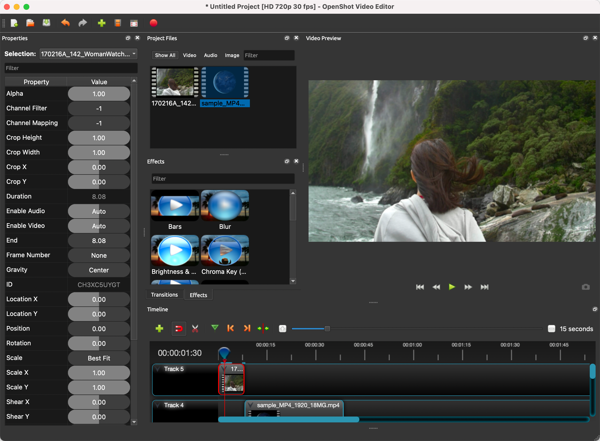

专题-从libopenshot学习视频编辑器
文章目录
libopenshot简介
libopenshot是OpenShot这款桌面软件的编辑库，其包含的功能有：
- Cross-Platform (Linux, Mac, and Windows) – 跨平台。我使用Windows的编辑软件剪辑过几次视频，功能没有Adobe Premiere那么多，但基本的视频剪辑是够用。由于我对这个领域不是很懂，细节上的优劣暂时还比较不出来。
- Multi-Layer Compositing – 多图层合并
- Video and Audio Effects (Chroma Key, Color Adjustment, Grayscale, etc…) – 视频、音频的特效
- Animation Curves (Bézier, Linear, Constant) – 动画曲线(贝塞尔、线性、常量)
- Time Mapping (Curve-based Slow Down, Speed Up, Reverse) – 时间映射(基于曲线的慢速、倍速、反转)
- Audio Mixing & Resampling (Curve-based) – 音频混合和重采样(基于曲线的)
- Audio Plug-ins (VST & AU) – 音频增效插件
- Audio Drivers (ASIO, WASAPI, DirectSound, CoreAudio, iPhone Audio, ALSA, JACK, and Android) – 音频驱动，由JUCE提供支持
- Telecine and Inverse Telecine (Film to TV, TV to Film) – 不知道这个怎么翻译，它的意思是两种格式互转，因为电影的帧率和色彩与视频不同，所以要进行互转
- Frame Rate Conversions – 帧率转换
- Multi-Processor Support (Performance) – 多处理器支持，使用的是OpenMP
- Python and Ruby Bindings (All Features Supported) – Python/Ruby的API，使用swig实现
- Qt Video Player Included (Ability to display video on any QWidget) – 包含Qt视频播放器
- Unit Tests (Stability)
- All FFmpeg Formats and Codecs Supported (Images, Videos, and Audio files) – 编解码这部分使用的是FFmpeg
- Full Documentation with Examples (Doxygen Generated) – 文档 & 样例
OpenShot可以理解为在libopenshot的基础上，用Qt实现用户界面以及相应功能的桌面软件。它的工作界面如下图：

专题
介绍
本专题试图通过一系列文章介绍libopenshot这个开源项目，并学习以下内容点：
- 跨平台c++开发
- 音视频编辑功能的实现
- 编解码器
- Timeline
- Clip
- 音频播放
- 视频播放
- 视频/音频帧的管理、控制
- 关键帧
- 视频效果
- 音频效果
- 曲线动画
文章列表
文章作者 teoking
上次更新 2021-07-30